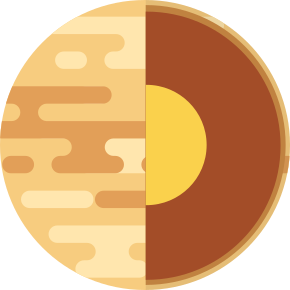
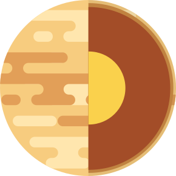

Vênus
Vênus é o segundo planeta em relação ao sol, tem o mesmo nome da deusa romana do amor e da beleza. Vênus é o segundo objeto natural mais brilhante do céu noturno, o primeiro é a Lua. Vênus pode projetar sombras e em raras ocasiões pode ser visivel a olho nu em plena luz do dia.
A semelhança em tamanho e densidade entre Vênus e a Terra sugere que eles compartilham uma estrutura interna semelhante: um núcleo, manto e crosta. Como o da Terra, o núcleo de Vênus é provavelmente pelo menos parcialmente líquido, porque os dois planetas estão esfriando aproximadamente na mesma taxa.
Grande parte da superfície de Vênus parece ter sido moldada por atividade vulcânica. Vênus tem muito mais vulcões do que a Terra, 167 deles possuem mais de 100 km de diâmetro. O único complexo vulcânico desse tamanho na Terra é a ilha Havaí.
- rotação
243 dias
- Translação
224,7 dias
- Raio
6.051 km
- Temperatura média
471 °C